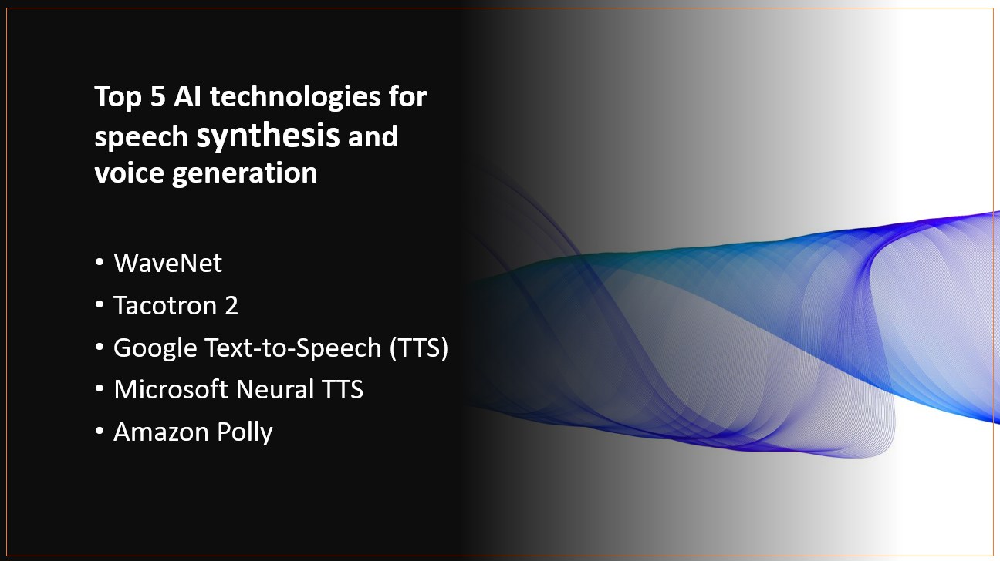

Introduction
Speech synthesis and voice generation technologies have significantly improved in recent years, enabling AI-powered systems to produce more natural and human-like voices. These AI technologies have diverse applications, including virtual assistants, audiobooks, accessibility tools, and more. In this blog post, we will explore the top five AI technologies for speech synthesis and voice generation, showcasing their capabilities and impact on various industries.
Why use AI technologies for speech synthesis and voice generation?
- AI technologies produce realistic and human-like voices.
- AI enables voice generation in multiple languages and accents.
- AI allows for customized and branded voices for specific applications.
- AI-driven speech synthesis automates conversion of text into spoken language.
Here's Our Top 5 AI technologies for speech synthesis and voice generation:
1: WaveNet
Overview and Importance
WaveNet is an advanced AI technology for speech synthesis and voice generation developed by DeepMind, a subsidiary of Alphabet Inc. It has revolutionized the field of text-to-speech (TTS) by producing high-quality, natural-sounding speech. WaveNet employs a deep generative model that directly models the raw waveform of audio, allowing it to generate human-like speech with remarkable accuracy and clarity.
Learn more about WaveNet
Key Features and Capabilities
Deep Generative Model
- WaveNet uses deep neural networks to model the audio waveform directly, enabling it to capture intricate details of human speech and produce highly realistic voices.
Expressive Prosody
- The architecture of WaveNet allows for expressive control of prosody, enabling it to adjust pitch, duration, and emphasis in speech synthesis, making the generated voices sound more natural and dynamic.
Multilingual Support
- WaveNet is designed to support multiple languages, making it a versatile AI technology for speech synthesis that can cater to various linguistic contexts and regional accents.
2: Tacotron 2
Overview and Importance
Tacotron 2 is an advanced AI technology for speech synthesis and voice generation developed by Google's AI research team. It is designed to generate high-quality and natural-sounding speech from text inputs. Tacotron 2 is a significant advancement in the field of text-to-speech (TTS) systems, as it utilizes a sequence-to-sequence model with attention mechanisms to produce more expressive and human-like voices.
Learn more about Tacotron 2
Key Features and Capabilities
Sequence-to-Sequence Model
- Tacotron 2 uses a sequence-to-sequence model, a type of deep neural network architecture, to convert input text into corresponding speech spectrograms. This model enables it to capture phonetic and prosodic features, resulting in clearer and more natural speech synthesis.
Attention Mechanisms
- The incorporation of attention mechanisms in Tacotron 2 allows the system to focus on relevant parts of the input text while generating speech. This attention-based approach enhances the coherence and contextuality of the synthesized voice.
WaveNet Post-processing
- Tacotron 2 employs WaveNet, an advanced generative model, for post-processing the speech spectrograms into raw audio waveforms. This additional step further refines the generated voices, making them more realistic and pleasant to listen to.
3: Google Text-to-Speech (TTS)
Overview and Importance
Google Text-to-Speech (TTS) is an essential AI technology for speech synthesis and voice generation offered by Google. It allows developers and users to convert written text into natural-sounding speech across various applications and devices. Google TTS plays a crucial role in enabling voice accessibility, improving user experience, and powering virtual assistants and voice-enabled technologies.
Learn more about Google Text-to-Speech (TTS)
Key Features and Capabilities
Multilingual Support
- Google TTS supports a wide range of languages and accents, making it suitable for global applications and catering to diverse audiences.
Natural and Expressive Voices
- The system offers high-quality and expressive voices that closely resemble human speech, enhancing the naturalness and fluency of the generated audio.
Customization Options
- Google TTS provides options to adjust speech rate, pitch, and volume, enabling developers to fine-tune the synthesized voice according to their specific requirements and preferences.
4: Microsoft Neural TTS
Overview and Importance
Microsoft Neural TTS is a cutting-edge AI technology for speech synthesis and voice generation developed by Microsoft. It employs advanced neural network models to create natural and lifelike speech from written text. Microsoft Neural TTS is crucial for applications requiring high-quality, expressive voice output, such as virtual assistants, audiobooks, and accessibility tools.
Learn more about Microsoft Neural TTS (TTS)
Key Features and Capabilities
Neural Network Models
- Microsoft Neural TTS leverages deep learning neural network models to generate speech, enabling more human-like and expressive voice synthesis.
Custom Voice Creation
- The platform allows users to create custom voices by training the system on specific datasets, enabling personalized and unique voice output for various applications.
Expressive Speech Style
- Microsoft Neural TTS can produce speech in various styles and emotions, providing flexibility in tailoring the voice's tone and expression to suit different scenarios and contexts.
5: Amazon Polly
Overview and Importance
Amazon Polly is a leading AI technology for speech synthesis and voice generation offered by Amazon Web Services (AWS). It utilizes advanced deep learning algorithms to convert text into lifelike speech, making it suitable for various applications, including voice assistants, e-learning platforms, and audiobook narration.
Learn more about Amazon Polly
Key Features and Capabilities
Natural Sounding Voices
- Amazon Polly provides a wide range of natural-sounding voices in multiple languages and accents, enabling developers to choose the most appropriate voice for their applications.
SSML Support
- The platform supports Speech Synthesis Markup Language (SSML), allowing users to control the speech output with additional instructions for pause, pitch, volume, and more.
Real-time Synthesis
- Amazon Polly offers real-time speech synthesis, enabling users to generate dynamic and interactive speech responses in applications that require immediate voice feedback.
Conclusion
AI technologies are vital for speech synthesis, producing natural and high-quality voices. The top five AI technologies are WaveNet, Tacotron 2, Google Text-to-Speech, Microsoft Neural TTS, and Amazon Polly. They enhance virtual assistants, accessibility tools, entertainment, and various industries. Businesses and developers are encouraged to explore these AI technologies to create engaging and lifelike voice experiences for their applications, improving user interactions and satisfaction.